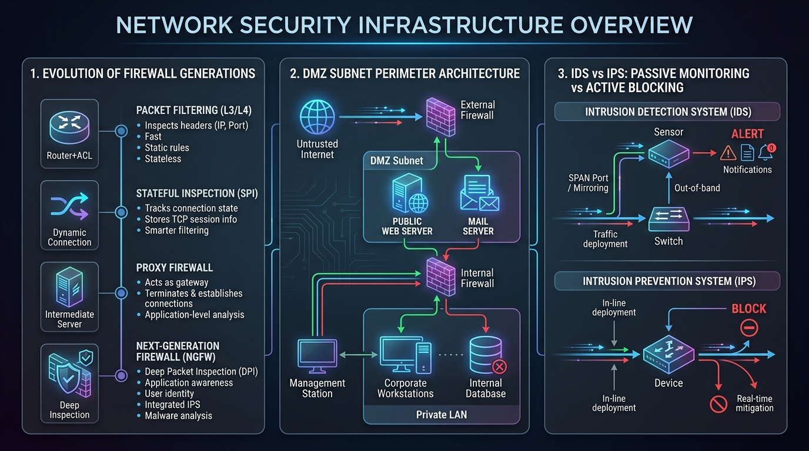

Understand core network security principles (CIA Triad), Firewall types (Stateless vs Stateful SPI, NGFW), DMZ network perimeter design, and IDS vs IPS detection/prevention.
The foundation of information security rests upon three core pillars known as the CIA Triad:
A Firewall is a network security system that monitors and controls incoming and outgoing network traffic based on predetermined security rules.
| Firewall Generation / Type | OSI Layer | Operating Mechanism |
|---|---|---|
| Stateless Packet Filter | Network / Transport (Layers 3–4) | Inspects individual packet headers (IPs, Ports) against Access Control Lists (ACLs) without tracking connection state. |
| Stateful Packet Inspection (SPI) | Transport (Layer 4) | Tracks active TCP connection states in a state table. Automatically permits return traffic for legitimate outbound connections. |
| Circuit-Level Gateway | Session (Layer 5) | Validates TCP handshakes before permitting sessions without inspecting actual payload contents. |
| Application-Level Gateway (Proxy) | Application (Layer 7) | Terminates incoming connection, deep-inspects payload contents (e.g. HTTP, FTP), and forwards request to destination. |
| Next-Generation Firewall (NGFW) | Layers 3 through 7 | Combines SPI with Deep Packet Inspection (DPI), Intrusion Prevention (IPS), TLS decryption, and Application Identification. |
A DMZ (Demilitarized Zone) is a physical or logical subnetwork that isolates public-facing services (e.g. Web, Mail, DNS servers) from an organization's private internal LAN.
If a hacker compromises a public web server in the DMZ, the internal firewall blocks them from reaching sensitive private databases in the internal LAN!
| Feature | IDS (Intrusion Detection System) | IPS (Intrusion Prevention System) |
|---|---|---|
| Operating Mode | Passive / Out-of-band (copies traffic via TAP/SPAN port) | Active / Inline (all traffic physically passes through IPS) |
| Action Taken | Alerts admins and logs event (No direct packet blocking) | Drops malicious packets, resets connections, blocks attacker IP in real-time |
| Latency Impact | Zero latency impact on production traffic | Minor latency overhead due to inline packet processing |
| Deployment Risk | Low risk (cannot break legitimate network traffic) | Higher risk (false positives can block legitimate traffic) |
